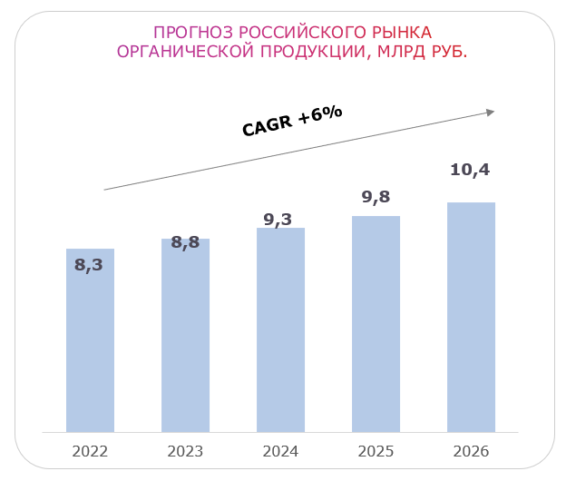

Урок 3. Тенденции и тренды потребления органической продукции в России
Потребление органической продукции в России растет высокими темпами, на конец 2021 года ежегодный рост составляет 10% 一 это почти 8 млрд рублей. При этом рост идет с низкой базой. Доля РФ в мировом рынке составляет сегодня лишь 0,1%.
Так происходит, потому что тренд на потребление здорового питания только зарождается в России. При этом в России есть огромный потенциал для взрывного роста в десятки и даже сотни раз.
Основные факторы в поддержку органической системы хозяйствования:
1) низкий уровень загрязнения окружающей среды
2) относительно высокий уровень развития транспортной инфраструктуры
3) наличие пастбищных угодий
По данным Национального органического союза, на конец 2019 г. в России сертифицировано не так много земли под органическое сельское хозяйство 一 390 тыс. га. При этом за последние пять лет площадь увеличилась на 13%, что говорит о растущем тренде на органическое сельское хозяйство.
Основные потребители органической продукции
Сегодня основными потребителями органической продукции являются женщины, живущие в крупных городах, старше 30 лет и с доходом выше среднего. Для этой группы важны качественные продукты, они заботятся о своей семье и готовы переплачивать.
Второй сегмент 一 люди, которым рекомендована органика по состоянию здоровья. Самыми равнодушными к наполнению своей корзины полезными товарами оказались молодые мужчины в возрасте до 30 лет.
Сегодня зарождается еще один сегмент, который выбирает органику, 一 это молодежь до 20 лет, они задумываются о потреблении здоровой и качественной пищи. Но они пока не готовы платить больше. Через пару лет они станут одними из ключевых потребителей.
Для увеличения потребления органической продукции необходимо снизить ее себестоимость и повысить осведомленность населения.
Маркировка и осведомленность населения
Пока на рынке органики мало, и одна из причин этого маркировка. Размытость требований к маркировке все еще дезориентирует покупателей:
- 82% потребителей признались в своем стремлении покупать товары самого высокого качества
- 64% покупателей полагают, что гарантией качества является наклейка «натуральное»
- 17% — полагают, что гарантией качества является наклейка «органическое»
Социологические данные
По данным социологического агентства «Ромир» за 2021 год:
- 43% россиян готовы платить больше, если товар является органическим (на треть выше, чем в 2019 г.)
- 65% готовы покупать натуральные продукты (декларация намерения и желание видеть в продуктовой корзине качественные продукты)
- Лишь менее 5% готовы платить за органическую продукцию в 2 — 3 раза дороже неорганической (в сегодняшних ценах)
Снижение себестоимости и цены реализации
Возможно снижение себестоимости и цены реализации уровня ЕС, где разница между себестоимостью и ценой реализации не превышает 50%) за счет роста предложения и технологического развития:
- Расширение использования биологических средств защиты растений
- Повышение качества семенного материала
- Агротехнологии, орошения
Производители органической продукции
Производители органической продукции распределены неравномерно по территории РФ. Наибольшее количество производителей сосредоточено в ЦФО, около основных точек потребления — крупных городов.
Основные категории органической продукции
Крупнейшая категория органической продукции — детское питание, занимает 37% рынка; на фруктовые/овощные соки приходится 28%, на печенье, батончики и фруктовые закуски — 17%, на соусы, заправки и приправы — 6%, и на кондитерские изделия — 5%.
Итоги двух лет действия закона об органической продукции
Итоги двух лет действия закона об органической продукции показали, что в 2021 году количество отечественных производителей органики увеличилось на 52% по сравнению с 2020-м. Сегодня большинство производителей органического рынка небольшие, но при этом все больше холдингов начинают заходить на этот рынок.
Как продается органическая продукция на российском рынке
Сейчас на рынке органической продукции не так много, что обусловлено высокой разницей в цене. Российская органическая продукция активнее продается через специализированные интернет-магазины.
Федеральные торговые сети
Федеральные торговые сети работают с мелкими и средними сельхозпроизводителями на одинаковых условиях, как и с крупными агрохолдингами. Требования торговых сетей мелким и средним cельхозпроизводителям выполнить сложно, что тоже негативно сказывается на росте рынка органической продукции.
Для увеличения продажи органики в торговых сетях
Для увеличения продажи органики в торговых сетях необходимо обеспечить такие опции, как:
- Отдельная полка в магазинах с органической продукцией
- Штрих-код для проверки информации о продукции на месте
- Понятная навигация в магазине
- Информационный стенд
Союз органического земледелия
Союз органического земледелия рекомендует производителям органической продукции развивать собственные, прямые продажи:
- Через создание собственных торговых точек на базе сельхозпроизводства
- Через социальные сети
Куда дальше будет двигаться рынок
Рынок органической продукции в России будет расти с темпом 6% и достигнет 10,4 млрд рублей к 2026 году. Стоит отметить, что развитие как отечественного производства, так и импорта приведет к увеличению роста органической продукции в течение прогнозируемого периода.
У производимой органической продукции в России есть огромный потенциал
Если посмотреть, как выглядит рынок органики в Европе, то рынок потребления растет быстрее, чем производство, в Китае темпы роста рынка органики — одни из самых высоких в мире, ежегодный прирост за последние 10 лет более 1 млрд евро в год. Сегодня в России готовность платить за органику обусловлена низкой покупательской способностью, но выход производителей на экспортные рынки может помочь в реализации продукции, и при этом рентабельность продаж будет достаточно высокой.